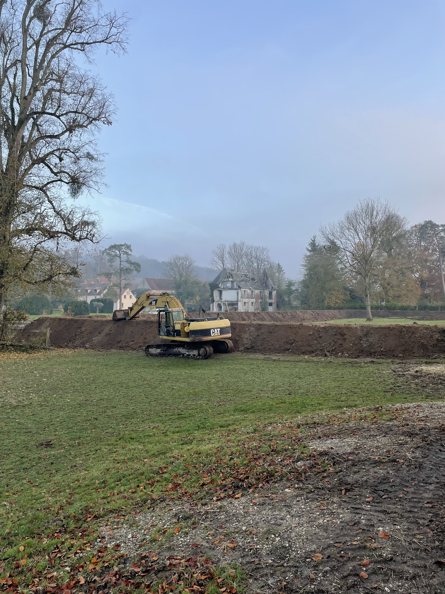

Une pompe submersible fluidifie les sédiments à l'eau sous pression et les aspire vers un bassin d'accueil creusé à proximité. L'eau décantée revient dans l'étang en continu — le niveau ne baisse pas.
Un bassin est creusé à proximité de l'étang pour accueillir les sédiments pompés. Il joue le rôle de décanteur : les boues se déposent au fond, l'eau clarifiée remonte en surface.

La pompe submersible injecte de l'eau sous pression pour fluidifier les boues, puis les aspire en continu vers le bassin d'accueil.
L'eau qui surnage dans le bassin de décantation est réinjectée dans l'étang en continu — le niveau reste constant pendant toute la durée du chantier.
Une fois le pompage terminé, la vase laissée dans le bassin sèche puis est évacuée et épandue sur des terres agricoles voisines comme amendement naturel.
Diagnostic téléphonique gratuit, sans engagement.